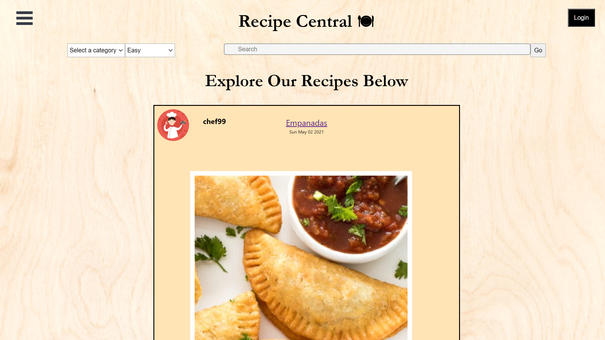

UX Designer & Web Developer.
I'm a recent graduate from the New York University Collge of Arts and Sciences with a Bachelor of Arts Degree in Computer Science.
Resume
Education
Bachelor of Arts in Computer Science
2016 - 2021
New York University, College of Arts and Sciences, (NY, NY)
Relevant Coursework: Java Programming, Data Structures, Discrete Mathematics, Basic Algorithms, Computer Systems Organization, Operating Systems, Agile Software Development, Big Data, Applied Internet Technology
Experience
Technology Operations Intern
Aug 2020 - May 2021
Kang Tai International Trading Co. (Brooklyn, NY)
- Manage e-Commerce content, creating custom web interface templates utilizing HTML, CSS and JavaScript.
- Assess technology and software gaps related to business needs, conducting appropriate research on new tools to streamline existing operations.
- Provide on-demand technical support and serve as first point of contact for hardware related issues for a staff of 50
Skills
Technical
- Python
- C
- Java
- HTML(5), CSS3, JavaScript,
- React.js, Express.js, Node.js
Computer
- Experienced in Microsoft Word, Excel, PowerPoint, Google Docs and Social Media
- Adobe Certified Associate in Visual Communication using Photoshop CS6
- Adobe Certified Associate in Graphic Design & Illustration using Adobe Illustrator CC
Languages
- English
- Cantonese
- Mandarin
Leadership/Professional Development
Women In Coding | Member
- Participate in events designated to advancing women in the computer science field
Share Meals | Member
- Volunteer in food making and packaging to ensure all college students are food secure
Built By Girls : WAVE Program | Advisee
- Build connections and receive support from professionals in the field
- Develop and learn about valuable skills and personal experiences in the workforce.
Portfolio

Recipe Central
- Work with a group of 5 using Agile development methodologies and Scrum framework
- Use React.js, Express.js, and Node.js to develop and run a web app for a social media oriented recipe sharing platform
- Use HTML, JavaScript, and CSS to develop front-end of the web app
- Use axios, mongoose, and multer to manage user input